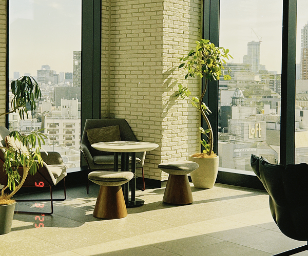

My goal is to make digital experiences seamless
Whether I'm building full-stack applications, analyzing data, or designing in Figma, I enjoy finding creative ways to connect functionality with user experience.
My academics have helped me build a wide range of skills in software development, data analysis, and user-centered design that I love applying to real-world projects.
